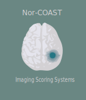

MR scoring systems in Nor-COAST
Till Schellhorn
2017-01-25
1 Background

The Norwegian Cognitive Impairment after Stroke ( Nor-COAST ) study Beside the quantitative analysis of MR-brain scans done in the Nor-COAST study, we will do a visual assessment of every included MR sequence. This assessment should incorporate both a quality assurance of the technical aspects and a semi quantitative scoring of pathological changes in the imaged brain. This document is intended to work as a draft for all participating professions to establish one common ground for further communication and analysis of MR-brain scans in the Nor-COAST study.
Every chapter deals with one aspect of the assessment. Starting with the technical quality assurance 2 and proceeding with white matter changes, medial temporal lobe atrophy and cortical atrophy. Further we will discuss a semiquantitative scoring system of susceptibility-weighted-imaging sequences. Hopefully this work leads to scoring-systems all disciplines can agree upon.